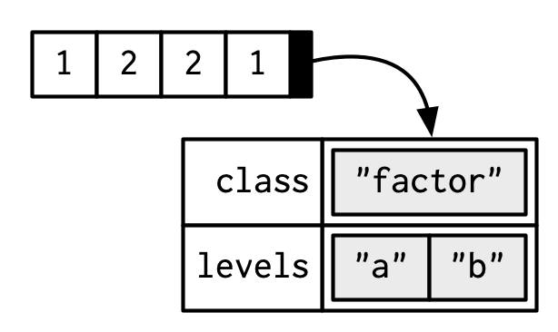

Vectors
David Gerard
2022-01-12
Learning Objectives
- Understanding the fundamental objects in R
- Chapter 3 from Advanced R
- These lecture notes are mostly taken straight out of Hadley’s book. Many thanks for making my life easier.
- His images, which I use here, are licensed under

- The topic should be mostly review, but we will go a little deeper.
Vector Types
- Two types of vectors:
- Atomic: All elements of same type.
- List (“generic vectors”): Objects may be of different types.
- (low-key third type)
NULL: Absence of a vector.

Atomic Vectors
Four basic types:
- Logical: Either
TRUEorFALSE - Integer:
- Exactly an integer. Assign them by adding
Lbehind it (for “long integer”). -1L,0L,1L,2L,3L, etc…
- Exactly an integer. Assign them by adding
- Double:
- Decimal numbers.
1,1.0,1.01, etc…Inf,-Inf, andNaNare also doubles.
- Character:
- Anything in quotes:
"1","one","1 won one", etc…
- Logical: Either
Integers and doubles are together called “numerics”

You can determine the type with
typeof().x <- c(TRUE, FALSE) typeof(x)## [1] "logical"x <- c(0L, 1L) typeof(x)## [1] "integer"x <- c(0, 1) typeof(x)## [1] "double"x <- c("0", "1") typeof(x)## [1] "character"typeof(Inf)## [1] "double"typeof(NaN)## [1] "double"Determine the length of a vector using
length()length(x)## [1] 2Missing values are represented by
NA.NAis technically is a logical value.typeof(NA)## [1] "logical"This rarely matters because logicals get coerced to other types when needed.
typeof(c(1L, NA))## [1] "integer"typeof(c(1, NA))## [1] "double"typeof(c("1", NA))## [1] "character"But if you need missing values of other types, you can use
NA_integer_ ## integer NA NA_real_ ## double NA NA_character_ ## character NANever use
==when testing for missingness. It will returnNAsince it is always unknown if two unknowns are equal. Useis.na().
x <- c(NA, 1) x == NA## [1] NA NAis.na(x)## [1] TRUE FALSEYou can check the type with
is.logical(),is.integer(),is.double(), andis.character().is.logical(TRUE)## [1] TRUEis.integer(1L)## [1] TRUEis.double(1)## [1] TRUEis.character("1")## [1] TRUEAttempting to combine vectors of different types coerces them to one time. The order of preference is character > integer > double > logical.
typeof(c(1L, TRUE))## [1] "integer"typeof(c(1, 1L))## [1] "double"typeof(c("1", 1))## [1] "character"Exercise (from Advanced R): Predict the output:
c(1, FALSE) c("a", 1) c(TRUE, 1L)Exercise (from Advanced R): Explain these results:
1 == "1"## [1] TRUE-1 < FALSE## [1] TRUE"one" < 2## [1] FALSE
Attributes
Attributes are meta information applied to atomic vectors.
Many common objects (like matrices, arrays, factors, date-times) are just atomic vectors with special attributes.
You get and set attributes with
attr()a <- 1:3 attr(a, "x") <- "abcdef" # sets x attribute of vector a to be "abcdef" attr(a, "x") # retrieve the x attribute of vector a## [1] "abcdef"You can see all attributes of a vector with
attributes().attr(a, "y") <- 4:6 attributes(a)## $x ## [1] "abcdef" ## ## $y ## [1] 4 5 6Attributes are name-value pairs, and all of these attributes are associated with an object:

Most attributes are typically lost by most operations.
attributes(a[[1]])## NULLattributes(sum(a))## NULLTwo attributes are not log, names and dim.
Names
Names are are a character vector the same length as the atomic vector. Each name corresponds to a single element.
You could set names using
attr(), but you should not.x <- 1:3 attr(x, "names") <- c("a", "b", "c") attributes(x)## $names ## [1] "a" "b" "c"Names are so special, that there are special ways to create them and view them
x <- c(a = 1, b = 2, c = 3) names(x)## [1] "a" "b" "c"x <- 1:3 names(x) <- c("a", "b", "c") names(x)## [1] "a" "b" "c"The proper way to think about names is like this:

But each name corresponds to a specific element, so Hadley does it like this:

Names stay with single bracket subsetting (not double bracket subsetting)
names(x[1])## [1] "a"names(x[1:2])## [1] "a" "b"names(x[[1]])## NULLNames can be used for subsetting (more in Chapter 4)
x[["a"]]## [1] 1
Dimensions
The dim attribute makes a vector into a matrix (a rectangle of numbers) or an array (a block of numbers).
Again, you could use
attr()to setdim, but you should not.x <- 1:6 attr(x, "dim") <- c(2, 3) x## [,1] [,2] [,3] ## [1,] 1 3 5 ## [2,] 2 4 6x <- 1:12 attr(x, "dim") <- c(2, 2, 3) x## , , 1 ## ## [,1] [,2] ## [1,] 1 3 ## [2,] 2 4 ## ## , , 2 ## ## [,1] [,2] ## [1,] 5 7 ## [2,] 6 8 ## ## , , 3 ## ## [,1] [,2] ## [1,] 9 11 ## [2,] 10 12You should either use
matrix()orarray()to create these objects, or set the dimension withdim().x <- 1:6 dim(x) <- c(2, 3) dim(x)## [1] 2 3x <- matrix(1:6, nrow = 2, ncol = 3) dim(x)## [1] 2 3y <- 1:12 dim(y) <- c(2, 2, 3) dim(y)## [1] 2 2 3y <- array(1:12, dim = c(2, 2, 3)) dim(y)## [1] 2 2 3length()still works on matrices and arrays, but is less usefullength(x)## [1] 6length(y)## [1] 12Instead, use
nrow()andncol()(for matrices), ordim()(for arrays).nrow(x)## [1] 2ncol(x)## [1] 3dim(y)## [1] 2 2 3Instead of having
names, arrays and matrices ofdimnames. Thedimnamesof an array is a list the same length as the number of dimensions of the array.x <- array(1:12, dim = c(2, 2, 3)) dimnames(x) <- list(first = c("a", "b"), second = c("c", "d"), third = c("e", "f", "g")) dimnames(x)## $first ## [1] "a" "b" ## ## $second ## [1] "c" "d" ## ## $third ## [1] "e" "f" "g"x## , , third = e ## ## second ## first c d ## a 1 3 ## b 2 4 ## ## , , third = f ## ## second ## first c d ## a 5 7 ## b 6 8 ## ## , , third = g ## ## second ## first c d ## a 9 11 ## b 10 12This is useful for subsetting, and for bookkeeping when you have data structured in a complicated multidimensional array (e.g. it is hard to remember what indexes the first vs second vs third dimensions without dimnames).
x["a", "c", "g"]## [1] 9A vector is not a matrix with 1 dimension. It has
NULLdimensions.z <- c(1, 2, 3) dim(z)## NULLExercise: What’s the differences between
ncol()andNCOL(). Read the help file and demonstrate some code where they provide different results.Exercise (from Advanced R): How would you describe the following three objects? What makes them different from 1:5?
x1 <- array(1:5, c(1, 1, 5)) x2 <- array(1:5, c(1, 5, 1)) x3 <- array(1:5, c(5, 1, 1))Exercise: How do you get rid of the dimensions in the following array?
x <- array(1:12, dim = c(2, 2, 3))
S3 Atomic Vectors
The class of an object is an important attribute that controls R’s S3 system for object oriented programming.
The class of an object will determine its behavior when you use that class in a generic function such as
print()orsummary().- A generic function is a function that has different behavior based on the class of the input.
You can create your own S3 classes (chapter 13).
Here, we will talk about some S3 classes that come with R by default.
You can determine the class of object with
class(), and you can set the class toNULLbyunclass().Factors, Dates, and POSIXct (date-times)

A factor is an integer vector with
- The
classattributefactor, and - A
levelsattribute describing the possible levels
x <- factor(c("a", "b", "b", "a")) x## [1] a b b a ## Levels: a btypeof(x)## [1] "integer"class(x)## [1] "factor"attributes(x)## $levels ## [1] "a" "b" ## ## $class ## [1] "factor"
- The
R also does some stuff under the hood for encoding factors.
Factors are R’s way of storing categorical variables, and are useful when a variable only has a certain number of possible values.
A Date is a double vector with class attribute
Date.today <- Sys.Date() typeof(today)## [1] "double"attributes(today)## $class ## [1] "Date"class(today)## [1] "Date"Let’s look at the underlying double to today:
unclass(today)## [1] 19004- This is the number of days since January 1, 1970:
unclass(as.Date("1970-01-01"))## [1] 0Date-time classes are called either
POSIXct(Portable Operating System Interface in Unix, Calendar Time) orPOSIXlt(Portable Operating System Interface in Unix, Local Time).POSIXctshows up more often. It is a double representing the number of seconds since the beginning of 1970.now <- Sys.time() typeof(now)## [1] "double"class(now)## [1] "POSIXct" "POSIXt"unclass(now)## [1] 1.642e+09POSIXltis a named list of vectors with elements representing seconds, minutes, hours, days of the month, months, years, weekdays, etc…You mostly interact with these date-time objects through the
{lubridate}package, but base R has their own interfaces (which I think are more difficult to use).Exercise (From Advanced R):
table()will take as input a vector or vectors and count how many observations have each value. What sort of object doestable()return? What is its type? What attributes does it have? How does the dimensionality change as you tabulate more variables?tab1 <- table(c("A", "A", "B")) tab1## ## A B ## 2 1typeof(tab1) ## integer## [1] "integer"attributes(tab1) ## has dimnames like an array## $dim ## [1] 2 ## ## $dimnames ## $dimnames[[1]] ## [1] "A" "B" ## ## ## $class ## [1] "table"tab2 <- table(c("A", "A", "B"), c(1, 2, 3)) tab2## ## 1 2 3 ## A 1 1 0 ## B 0 0 1typeof(tab2) ## integer## [1] "integer"attributes(tab2) ## dimnames is a list of length 2 now## $dim ## [1] 2 3 ## ## $dimnames ## $dimnames[[1]] ## [1] "A" "B" ## ## $dimnames[[2]] ## [1] "1" "2" "3" ## ## ## $class ## [1] "table"
Lists
Lists are like vectors except each element can be of any type.
You create lists with
list().lobj <- list(a = 1:3, log_val = TRUE, list(c = 10))You can view a list with
str().str(lobj)## List of 3 ## $ a : int [1:3] 1 2 3 ## $ log_val: logi TRUE ## $ :List of 1 ## ..$ c: num 10
Creating Empty Vectors
In many applications, you will want to create empty vectors or vectors filled with missing values.
Create an empty vector with
vector().vector(mode = "character", length = 0)## character(0)vector(mode = "double", length = 0)## numeric(0)vector(mode = "integer", length = 0)## integer(0)vector(mode = "logical", length = 0)## logical(0)Empty vectors often show up in defaults that are returned when folks ask for something of length 0.
E.g., in simulate
You often want to create an empty vector that you then fill in with values. I like to create this vector to be missing values, so that I know I made a mistake if they are not all filled in.
n <- 100 x <- rep(NA_character_, lenght.out = n) x <- rep(NA_integer_, lenght.out = n) x <- rep(NA_real_, lenght.out = n) x <- rep(NA, lenght.out = n)E.g. in a for-loop, you often fill in the elements of a vector. Let’s suppose we are evaluating the performance of the mean in a simulation study.
nsim <- 1000 ## number of simulations nsamp <- 10 ## sample size mvec <- rep(NA_real_, length.out = nsim) true_mean <- 0 for (i in seq_len(nsim)) { mvec[[i]] <- mean(rnorm(n = nsamp, mean = true_mean)) } mean((mvec - true_mean)^2) ## mean squared error## [1] 0.1049If you are filling in the values of a matrix, you need to be able to create a matrix with missing values.
n <- 100 p <- 3 matval <- matrix(NA_character_, nrow = p, ncol = n) matval <- matrix(NA_real_, nrow = p, ncol = n) matval <- matrix(NA_integer_, nrow = p, ncol = n) matval <- matrix(NA, nrow = p, ncol = n)c()will combine a lists into a single list. If you usec()with a list and a vector, then it will first coerce the vector into a list where each element is a list.
l1 <- list(1:2,
c("a", "b"))
l2 <- list(c(TRUE, FALSE))
c(l1, l2)## [[1]]
## [1] 1 2
##
## [[2]]
## [1] "a" "b"
##
## [[3]]
## [1] TRUE FALSEc(l1, c("c", "d"))## [[1]]
## [1] 1 2
##
## [[2]]
## [1] "a" "b"
##
## [[3]]
## [1] "c"
##
## [[4]]
## [1] "d"as.list(c("c", "d")) ## this is what it does before combining## [[1]]
## [1] "c"
##
## [[2]]
## [1] "d"typeof()will return"list"andis.list()tests for a list.typeof(l1)## [1] "list"is.list(l1)## [1] TRUEUse
unlist()to remove the list structure.l1## [[1]] ## [1] 1 2 ## ## [[2]] ## [1] "a" "b"unlist(l1)## [1] "1" "2" "a" "b"The
dimattribute can be applied to lists
lmat <- list(1:2,
3:10,
runif(4),
c("Hello", "world"))
dim(lmat) <- c(2, 2)
lmat## [,1] [,2]
## [1,] integer,2 numeric,4
## [2,] integer,8 character,2lmat[[1, 2]]## [1] 0.45261 0.31392 0.02937 0.05530Data Frames
Data Frames are lists where
- Each element is a vector.
- Each vector has the same length.

df <- data.frame(a = 4:6, b = c("A", "B", "C")) typeof(df)## [1] "list"attributes(df)## $names ## [1] "a" "b" ## ## $class ## [1] "data.frame" ## ## $row.names ## [1] 1 2 3Above, the “names” attribute are the columnames, and you can get them with
colnames()colnames(df)## [1] "a" "b"names(df)## [1] "a" "b"The row.names are the row names, and you can obtain them with
row.names()orrownames().row.names()are specifically for data frames, whereasrownames()was designed for extracting dimnames and was also altered to work with data frames.
row.names(df)## [1] "1" "2" "3"rownames(df)## [1] "1" "2" "3"Those row names are automatically generated, but you can set them with
rownames().
rownames(df) <- c("h", "i", "j")
df## a b
## h 4 A
## i 5 B
## j 6 Ctibbles, from the package{tibble}are tidyverse data frames. The main differences are:Tibbles do not automatically coerce data (such as from strings to factors). Data frames used to do this in older versions of R.
data.frame(x = c("a", "b", "c"), stringsAsFactors = FALSE) ## needed to be safe for older versions of R## x ## 1 a ## 2 b ## 3 ctibble::tibble(x = c("a", "b", "c"))## # A tibble: 3 × 1 ## x ## <chr> ## 1 a ## 2 b ## 3 cTibbles do not change names if they happen to be non-syntactic (e.g. have spaces in them)
data.frame(`hello world` = c(1, 2, 3))## hello.world ## 1 1 ## 2 2 ## 3 3tibble::tibble(`hello world` = c(1, 2, 3))## # A tibble: 3 × 1 ## `hello world` ## <dbl> ## 1 1 ## 2 2 ## 3 3Tibbles will only recycle vectors of length 1.
data.frame(x = c(1, 2, 3, 4), y = c(1, 2))## x y ## 1 1 1 ## 2 2 2 ## 3 3 1 ## 4 4 2tibble::tibble(x = c(1, 2, 3, 4), y = c(1, 2))## Error: Tibble columns must have compatible sizes. ## * Size 4: Existing data. ## * Size 2: Column `y`. ## ℹ Only values of size one are recycled.{tibbles}do not reduce to vectors when you subset one column. Folks disagree on whether this is good or bad.df <- data.frame(`hello world` = c(1, 2, 3)) tib <- tibble::tibble(`hello world` = c(1, 2, 3)) attributes(df[, 1])## NULLattributes(tib[, 1])## $names ## [1] "hello world" ## ## $row.names ## [1] 1 2 3 ## ## $class ## [1] "tbl_df" "tbl" "data.frame"Data frames allow for row names, tibbles do not. Folks disagree on whether this is desirable (Hadley is extremely against it).
Tibbles print differently than data frames. Tibbles only print 10 rows and only the columns that will fit. But I actually prefer the data frame method better, because pretty doesn’t matter when you are doing data analysis, and it’s better to see all columns.
Exercise: Based on our discussion of making zero-length vectors, create a data frame with zero rows and columns
a, andb. Both should be double columns.Exercise: What does
data.frame()do without any arguments?Exercise: Use the
row.namesargument ofdata.frame()to create a data frame with 100 rows and no columns.
NULL
NULLis its own data type, that always has length 0.typeof(NULL)## [1] "NULL"length(NULL)## [1] 0NULLis used to represent an empty vector.c()## NULLNULLis often used as a default argument in a function for complicated arguments. The function operates one way unless a user specifies something for that argument. Look at?ashr::ash.workhorsefor multiple examples.f <- function(x = NULL) { if (is.null(x)) { ## do something } else { ## do something else } }NULLis one of the ways R handle’s missingness. The others areNAandNaN.NULL: An empty object. Can be thought of as a zero-length vector.NA: A missing value. Can be used as an element of a vector.NaN: Undefined numeric values, such as the output of0/0.
New Functions
typeof(): Determine the type of an object (character, double, integer, or logical).attr(): Get or set an attribute.attributes(): View all attributes.names(): Get or set names attributes.dim(): Get or set dim attributes.class(): Get or set class attributes.

This work is licensed under a Creative Commons Attribution-NonCommercial 4.0 International License.